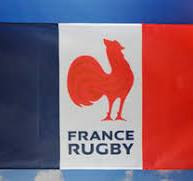

Member Of Men's Rugby Countries
- IRE
- RSA
- NZL
- FRA
- ENG
- ARG
- SCO
- ITA
- FIJ
- AUS
History
Origins
Different forms of football have existed for centuries. (For more on the development of football sports, see football.) In Britain, football games may have been played as early as the time of Roman occupation in the 1st century bce. During the 14th and 15th centuries ce, Shrove Tuesday football matches became annual traditions in local communities, and many of these games continued well into the 19th century. These localized versions of folk football (a violent sport distinctive for its large teams and lack of rules) gradually found favour within the English public (independent) schools, where they were modified and adapted into one of two forms: a dribbling game, played primarily with the feet, that was promoted at Eton and Harrow, and a handling game favoured by Rugby, Marlborough, and Cheltenham.
Game playing, particularly football, was encouraged at Rugby School by influential headmaster Thomas Arnold (1828–42), and many boys educated at this time were instrumental in the expansion of the game. Rugby football soon became one of the most significant sports in the promotion of English and, later, British imperial manliness. The game’s virtues were promoted by books such as Thomas Hughes’s Tom Brown’s School Days (1857). The cult of manliness that resulted centred on the public schools and the Universities of Oxford and Cambridge, where boys were sent to learn how to become young gentlemen. Part of the schoolboy’s training was a commitment to arduous physical activity, and, by the late 19th century, rugby and cricket had become the leading sports that developed the “civilized” manly behaviour of the elite. It was believed that rugby football instilled in the “muscular Christian” gentleman the values of unselfishness, fearlessness, teamwork, and self-control. Graduates of these public schools and of Oxford and Cambridge formed the first football clubs, which led to the institutionalization of rugby.
Once they had left school, many young men wanted to continue playing the game of their youth, and the early annual matches between alumni and current senior students were not enough to satisfy these players. Football clubs were formed in the mid-19th century, with one of the very first rugby clubs appearing at Blackheath in 1858. Rugby enthusiasm also spread rapidly to Ireland and Scotland, with a club founded at the University of Dublin in 1854 and the formation by the Old Boys of Edinburgh of the Edinburgh Academicals Rugby Football Club in 1858. In 1863 the tradition of club matches began in England with Blackheath playing Richmond.
Representatives of several leading football clubs met in 1863 to try to devise a common set of rules for football. Disputes arose over handling the ball and “hacking,” the term given to the tactics of tripping an opponent and kicking his shins. Both handling and hacking were allowed under rugby’s rules but disallowed in other forms of football. Led by F.W. Campbell of Blackheath, the rugby men refused to budge over hacking, calling those against the practice “unmanly.” Though Campbell’s group was in the minority, it refused to agree to the rules established for the new Football Association (FA) even though many elements of rugby rules were included in early compromises. Ultimately, rugby was left outside the FA. Despite the initial reluctance to abandon hacking, rugby clubs began to abolish the practice during the late 1860s. Blackheath banned it in 1865, and Richmond supported a similar prohibition in 1866.
A brief description of the countries
-
Wales
In Wales rugby clubs were established as town clubs in both large communities and small mining towns during the 1870s and ’80s. Many early players had some experience of the game in the north of England and took their interest with them to Wales. By the early 1880s rugby had become a vital part of working-class culture in south Wales, which distinguished the game there from its upper-class association in other parts of the British Isles. Wales had high levels of immigration in the late 19th century, and rugby emerged at this time as a focal point of a new modern Welsh nationalism. As a result, the Welsh Rugby Union formed in 1881, and Wales soon entered the Home Championship, competing with England, Ireland, and Scotland. Wales won its first title in 1893. Unlike England, a more competitive system arose in Wales, with a South Wales Challenge Cup being contested between 1878 and 1897 and an unofficial league system appearing by the 1930s. As the only team to defeat the powerful New Zealand team on its first tour of the British Isles, in 1905, Wales cemented its place as a dominant rugby power.
-
France
Rugby union football spread more slowly outside the British Empire, though it was played in France as early as 1870. There were 20 or more French clubs by 1892, mostly in and around Paris. Soon the game diffused to southwestern cities such as Bordeaux, Lyon, and Perpignon, where it became the most popular team sport. France joined the British Home Championship in 1910 to create the Five Nations Championship. In France the game was governed by the Union des Sociétés Françaises de Sports Athlétiques, a multisports group, from 1887 and by the French Rugby Federation from 1920.
 -
Italy
In the 1920s rugby also gained a foothold in Italy, particularly in the northwestern part of the country. The Italian Rugby Federation was founded in 1928. In the 1980s clubs supported by large companies began to organize payment of players in their club competition, and leading international players such as Naas Botha of South Africa, David Campese of Australia, and John Kirwin of New Zealand played rugby union in Italy. Italian rugby advanced significantly by the 1990s, and in 2000 Italy joined the Five Nations competition, which was then renamed Six Nations.
-
Canada and the United States
Rugby rules appeared in North America before the 1870s and were used in a famous game between McGill University of Montreal and Harvard University of Cambridge, Massachusetts, in 1874. In 1876 representatives of Harvard, Yale, Princeton, and Columbia universities formed the Intercollegiate Football Association, which, in general, agreed with the RFU’s 1871 rules. Rugby rules were soon modified in the United States and later in Canada, however, to create the distinct codes of gridiron football played in North America. Although gridiron football had largely supplanted both association football and rugby in the United States by late in the 19th century, rugby enjoyed a revival from 1905 on the Pacific Coast after gridiron football was banned there in the aftermath of a public furor over violence and player deaths and injuries. Rugby remained popular there after the gridiron sport was restored to its preeminent position. West Coast players largely made up the national rugby teams that won at the 1920 and 1924 Olympic Games, after which rugby was dropped as an Olympic sport. Rugby also retained a foothold in British Columbia in Canada. Into the 21st century a large proportion of players on the U.S. and Canadian national teams came from the West Coast region.
-
Australia
In Australia the game was closely associated with the eastern coastal region. The Southern Rugby Football Union was formed in Sydney in 1874. Only five clubs played in Sydney at that time, but by 1900, 79 clubs existed, with a senior and four junior competitions. The Metropolitan Rugby Union, later the New South Wales Rugby Union (NSWRU), was founded in 1897 to administer league competitions in Sydney and devised a district system that led to increased spectator interest. By the 1880s matches between teams representing New South Wales and New Zealand began, as rugby in Australia remained largely confined to the big east coast cities of Sydney and Brisbane. The national Australian Rugby Union was not formed until 1949. In other parts of Australia, Australian rules football had already established itself as the dominant sport.
-
New Zealand
In New Zealand the first rugby match was played at Nelson in 1870. However, rugby spread slowly owing to problems of distance and sparse population, and while regional unions appeared throughout the country by the mid-1880s, a national union, the New Zealand Rugby Football Union (NZRFU), was not founded until 1892. A New Zealand “Natives” tour (1888–89) of Australia and the British Isles was organized by an entrepreneur keen to exploit British perceptions of the “exotic” Maori population of New Zealand. A team made up mostly of Maori players toured Britain, winning 49 of its 74 matches, including many matches against clubs in the north of England that largely consisted of working-class players and that had become the best club teams in the country. In 1902 the Ranfurly Shield was presented by Earl Ranfurly, the governor of New Zealand, to serve as a trophy for a challenge competition between provincial rugby teams. The shield remains one of the most prized trophies in New Zealand’s domestic competition. In 1903 New Zealand played a truly national Australian team for the first time. New Zealand’s national team, known as the All Blacks for their black uniforms, defeated a visiting British national team in 1904, and on the All Blacks first tour of Britain, France, and North America the following year, they posted a stunning 34–1 record. Success in international rugby supported by strong domestic teams formed the backbone of New Zealand rugby and cemented its place as the country’s top sport.